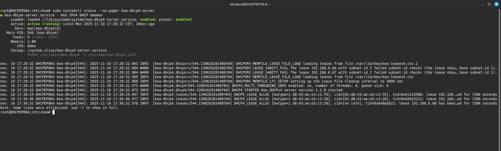
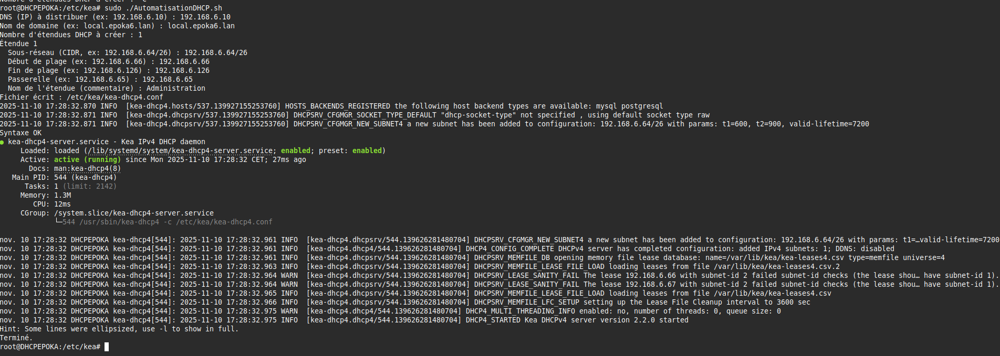
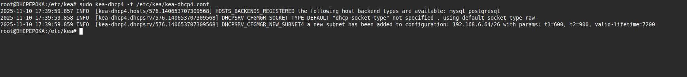
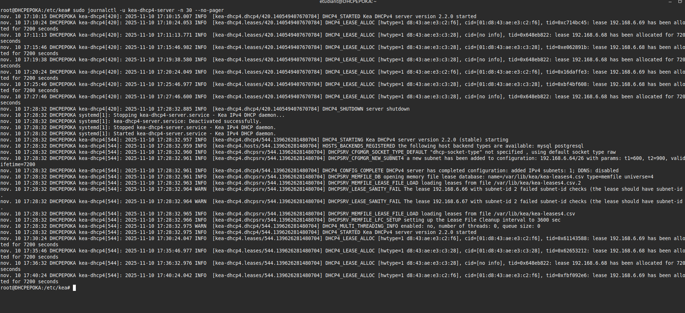
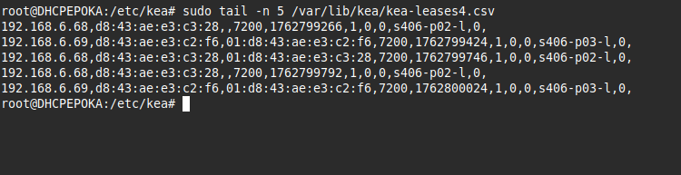
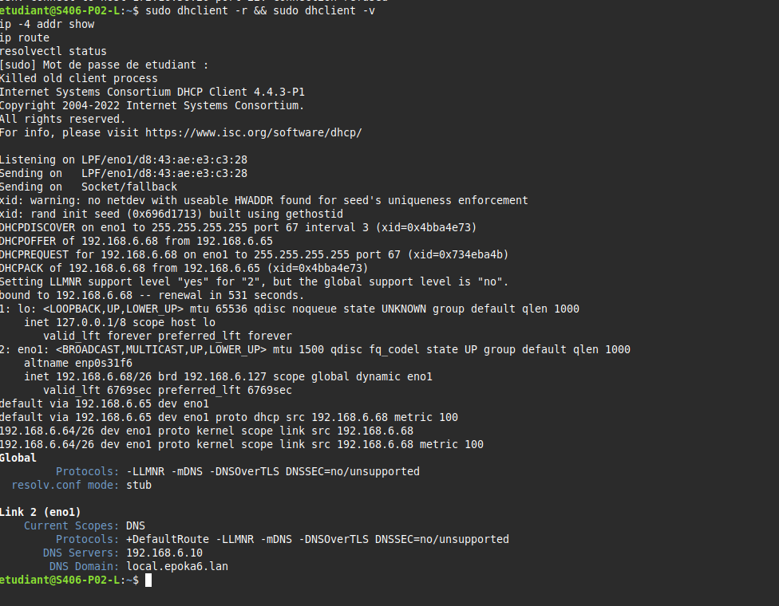

SP2 Remediation - Mission 1 et 2 - Automatisation de la configuration du DHCP¶

Présenté par Joris Texier
Version : 1
Date de rédaction : 10 novembre 2025
SOMMAIRE¶
- Mission 1 : Proposer une version du script « AutomatisationDHCP.sh »
- Script AutomatisationDHCP.sh (version simplifiée et commentée)
- Explication du fonctionnement
- Mission 2 : Vérifier sur le prototype l’automatisation et la distribution des paramètres réseau
- Commande à exécuter pour lancer le script
- Vérifications côté serveur
- Vérifications côté client
- Conclusion
Mission 1 : Proposer une version du script « AutomatisationDHCP.sh »¶
Objectif : Automatiser la configuration du serveur DHCP en utilisant Kea DHCP (version moderne remplaçant ISC DHCP, aujourd’hui déprécié). Le but est de créer un script simple, commenté et fonctionnel permettant de générer automatiquement un fichier de configuration JSON Kea valide.
Script AutomatisationDHCP.sh (version simplifiée et commentée)¶
#!/usr/bin/env bash
# =====================================================================
# Script : AutomatisationDHCP.sh
# Objet : Générer simplement une configuration DHCPv4 pour KEA (JSON)
# Note : Tous les messages "humains" partent sur stderr (>&2) pour
# ne jamais polluer le JSON écrit dans le fichier.
# =====================================================================
# Active des options de sécurité strictes :
# -e : stoppe le script si une commande échoue
# -u : interdit l’utilisation de variables non définies
# -o pipefail : considère un pipe | (permet de rediriger la sortie (stdout) d’une commande vers l’entrée (stdin) d’une autre commande.) comme raté si une commande échoue
set -euo pipefail
# Variable contenant l'emplacement du fichier de configuration Kea DHCP4
CONFIG_FILE="/etc/kea/kea-dhcp4.conf"
# Vérifie si la commande kea-dhcp4 existe, sinon affiche une erreur et quitte
command -v kea-dhcp4 >/dev/null 2>&1 || { echo "kea-dhcp4 introuvable" >&2; exit 1; }
# Début de la fonction de validation d'adresse IPv4
validate_ip() {
# Vérifie que l’adresse IP respecte le format x.x.x.x
[[ $1 =~ ^([0-9]{1,3}\.){3}[0-9]{1,3}$ ]] || return 1
# Sépare l’adresse en 4 octets
IFS='.' read -r a b c d <<< "$1"
# Vérifie que chaque octet est un nombre entre 0 et 255
for o in "$a" "$b" "$c" "$d"; do
[[ "$o" =~ ^[0-9]+$ ]] || return 1
(( o>=0 && o<=255 )) || return 1
done
# Retourne succès si tout est valide
return 0
}
# Début de la fonction de validation d’un réseau au format CIDR
validate_cidr() {
# Extrait l’adresse IP avant le /
local ip="${1%/*}"; local pfx="${1#*/}"
# Vérifie que l’entrée contient bien un /
[[ "$1" == */* ]] || return 1
# Valide la partie adresse IP
validate_ip "$ip" || return 1
# Vérifie que le préfixe est un nombre à 1 ou 2 chiffres
[[ "$pfx" =~ ^[0-9]{1,2}$ ]] || return 1
# Vérifie que le préfixe est compris entre 1 et 30
(( pfx>=1 && pfx<=30 )) || return 1
# Retourne succès si tout est correct
return 0
}
# Questions globales
# Boucle demandant une IP DNS jusqu’à obtenir une IP valide
while true; do
read -rp "DNS (IP) à distribuer (ex: 192.168.6.10) : " DNS
validate_ip "$DNS" && break || echo "IP invalide" >&2
done
# Demande le nom de domaine une seule fois
read -rp "Nom de domaine (ex: local.epoka6.lan) : " DOMAIN
# Boucle demandant le nombre d’étendues DHCP à créer jusqu'à obtenir un entier valide
while true; do
read -rp "Nombre d'étendues DHCP à créer : " N
[[ "$N" =~ ^[1-9][0-9]*$ ]] && break || echo "Nombre invalide" >&2
done
# Écriture du JSON Kea (stdout) vers le fichier (redirection finale)
# Tout le bloc entre { … } sera redirigé vers CONFIG_FILE
{
# Première partie du JSON générée via un here-document
cat <<'JSON_HEAD'
{
"Dhcp4": {
"interfaces-config": { "interfaces": ["*"] },
"lease-database": { "type": "memfile", "name": "/var/lib/kea/kea-leases4.csv" },
JSON_HEAD
# Insertion dynamique des options DNS et domaine dans le JSON
cat <<JSON_GLOBAL
"option-data": [
{ "name": "domain-name-servers", "code": 6, "space": "dhcp4", "csv-format": true, "data": "${DNS}" },
{ "name": "domain-name", "code": 15, "space": "dhcp4", "csv-format": true, "data": "${DOMAIN}" }
],
"valid-lifetime": 7200,
"renew-timer": 600,
"rebind-timer": 900,
"subnet4": [
JSON_GLOBAL
# Boucle de génération des blocs JSON pour chaque étendue DHCP
for ((i=1; i<=N; i++)); do
# Affiche dans stderr quelle étendue est en cours
echo "Étendue $i" >&2
local_subnet=""
# Demande du sous-réseau CIDR, avec validation
while true; do
read -rp " Sous-réseau (CIDR, ex: 192.168.6.64/26) : " local_subnet
validate_cidr "$local_subnet" && break || echo " CIDR invalide" >&2
done
# Initialisation des variables concernant la plage IP
local_start=""; local_end=""; local_gw=""; local_name=""
# Demande IP de début de plage
while true; do
read -rp " Début de plage (ex: 192.168.6.66) : " local_start
validate_ip "$local_start" && break || echo " IP invalide" >&2
done
# Demande IP de fin de plage
while true; do
read -rp " Fin de plage (ex: 192.168.6.126) : " local_end
validate_ip "$local_end" && break || echo " IP invalide" >&2
done
# Demande l'adresse IP de la passerelle
while true; do
read -rp " Passerelle (ex: 192.168.6.65) : " local_gw
validate_ip "$local_gw" && break || echo " IP invalide" >&2
done
# Demande d’un commentaire pour nommer l’étendue
read -rp " Nom de l'étendue (commentaire) : " local_name
# Si ce n’est pas la dernière étendue, on ajoute une virgule après l'objet JSON
if (( i < N )); then
cat <<JSON_SUBNET
{
"comment": "$local_name",
"subnet": "$local_subnet",
"pools": [ { "pool": "$local_start - $local_end" } ],
"option-data": [
{ "name": "routers", "code": 3, "space": "dhcp4", "csv-format": true, "data": "$local_gw" }
]
},
JSON_SUBNET
else
# Dernière étendue : pas de virgule finale pour respecter le format JSON
cat <<JSON_SUBNET_LAST
{
"comment": "$local_name",
"subnet": "$local_subnet",
"pools": [ { "pool": "$local_start - $local_end" } ],
"option-data": [
{ "name": "routers", "code": 3, "space": "dhcp4", "csv-format": true, "data": "$local_gw" }
]
}
JSON_SUBNET_LAST
fi
done
# Fin du JSON : fermeture du tableau subnet4 et de l’objet principal
cat <<'JSON_TAIL'
]
}
}
JSON_TAIL
# Fermeture du bloc redirigé vers le fichier Kea
} > "$CONFIG_FILE"
# Affiche le chemin du fichier écrit (stderr)
echo "Fichier écrit : $CONFIG_FILE" >&2
# Teste la validité syntaxique du JSON généré
kea-dhcp4 -t "$CONFIG_FILE"
# Indique que la syntaxe est correcte
echo "Syntaxe OK" >&2
# Vérifie si systemctl est disponible pour gérer le service Kea
if command -v systemctl >/dev/null 2>&1; then
# Redémarre le service Kea via systemctl
systemctl restart kea-dhcp4-server || true
# Affiche le statut du service
systemctl status --no-pager kea-dhcp4-server || true
else
# Méthode alternative pour les systèmes sans systemd
service kea-dhcp4-server restart || true
fi
# Message final indiquant que tout est terminé
echo "Terminé." >&2
Validation et redémarrage du service
kea-dhcp4 -t "$CONFIG_FILE" # Teste la validité du fichier JSON systemctl restart kea-dhcp4-server systemctl status --no-pager kea-dhcp4-server

Explication du fonctionnement
- Le script demande les informations DNS, domaine et sous-réseaux.
- Il génère automatiquement un fichier de configuration JSON Kea complet.
- Il teste la validité du fichier avec
kea-dhcp4 -t. - Il redémarre le service Kea pour appliquer la nouvelle configuration.
Mission 2 : Vérifier sur le prototype l’automatisation et la distribution des paramètres réseau¶
Objectif : Vérifier que le serveur Kea distribue bien les paramètres réseau (adresse IP, DNS, passerelle et domaine) aux clients DHCP via le script généré.
Commande à exécuter pour lancer le script¶
./Automatisation.sh
Vérifications côté serveur¶
Commandes exécutées :
sudo kea-dhcp4 -t /etc/kea/kea-dhcp4.conf
sudo systemctl status --no-pager kea-dhcp4-server
sudo journalctl -u kea-dhcp4-server -n 30 --no-pager
sudo tail -n 5 /var/lib/kea/kea-leases4.csv
Résultat attendu :
- Le service kea-dhcp4-server est actif et indique le sous-réseau ajouté.
- Le fichier kea-leases4.csv contient les adresses attribuées.




Vérifications côté client¶
Commandes exécutées :
sudo dhclient -r && sudo dhclient -v
ip -4 addr show
ip route
resolvectl status
Résultat attendu :
- Le client obtient une adresse IP dans la plage configurée.
- Le DNS et le domaine transmis par Kea apparaissent dans resolvectl status.

Conclusion¶
Le script d’automatisation DHCP Kea est fonctionnel. Les tests côté serveur et client montrent que les paramètres réseau sont correctement distribués. La configuration JSON est valide et le service Kea s’exécute sans erreur. Les baux sont bien enregistrés dans /var/lib/kea/kea-leases4.csv, confirmant le bon fonctionnement de l’automatisation.